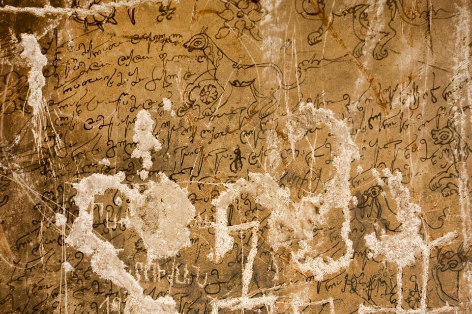

ვანის ქვაბების პოეტური წარწერა I
შინაარსი / Summary
მოსახსენებელი
ბიბლიოგრაფია Bibliography
კრიტიკული გამოცემა Interpretive Edition
† ღმერთო და ყუალა
წმიდაო დედოფალო
ღმრთისმშობელო
და რანიც წმინდანი მთავარანგელოზნი სუეანები ხართ თქუენს
5ძალას და მოწყალებას უშუელეთ და ულხინეთ მოსამსახურეს მიწას თქუენს თუალპატიოსანს
უებროს გულქანს ვიყავ დევ ნილი რომ მომიყვანა მანუ -
ჩარ ქალად და გასათხოვრად ქმარი ჯერ არ მედგა
ღმრთის მადლმა და ამა წმინდათა მადლმა ჩემსა
ულამაზესი სულიერი დედასმიწაზედა არა
10იარებოდა და არც სხუა გამოსულა არც თუალად არც ტანად
არც ზნითა არც გონებითა თუარემ ჩემნი მნახავნი არ
გამამტყუვნებენ ესე ხაზანნი არიან
ამისნი მოწამენი და ეს ლომი
დიპლომატიური გამოცემა Diplomatic Edition
† ႶႫႤႰႧႭ ႣႠ ႷႳႠႪႠ
ႼႫႨႣႠႭ ႣႤႣႭႴႠႪႭ
ႶႫႰႧႨႱႫႸႭႡႤႪႭ
ႣႠ ႰႠႬႨႺ ႼႫႨႬႣႠႬႨ ႫႧႠႥႠႰႠႬႢႤႪႭႦႬႨ ႱႳႤႠႬႤႡႨ ႾႠႰႧ ႧႵႳႤႬႱ
5ႻႠႪႠႱ ႣႠ ႫႭႼႷႠႪႤႡႠႱ ႳႸႳႤႪႤႧ ႣႠ ႳႪႾႨႬႤႧ ႫႭႱႠႫႱႠႾႳႰႤႱ ႫႨႼႠႱ ႧႵႳႤႬႱ ႧႳႠႪႮႠႲႨႭႱႠႬႱ
ႳႤႡႰႭႱ ႢႳႪႵႠႬႱ ႥႨႷႠႥ ႣႤႥ ႬႨႪႨ ႰႭႫ ႫႭႫႨႷႥႠႬႠ ႫႠႬႳ
ႹႠႰ ႵႠႪႠႣ ႣႠ ႢႠႱႠႧႾႭႥႰႠႣ ႵႫႠႰႨ ႿႤႰ ႠႰ ႫႤႣႢႠ
ႶႫႰႧႨႱ ႫႠႣႪႫႠ ႣႠ ႠႫႠ ႼႫႨႬႣႠႧႠ ႫႠႣႪႫႠ ႹႤႫႱႠ
ႳႪႠႫႠႦႤႱႨ ႱႳႪႨႤႰႨ ႣႤႣႠႱႫႨႼႠႦႤႣႠ ႠႰႠ
10ႨႠႰႤႡႭႣႠ ႣႠ ႠႰႺ ႱႾႳႠ ႢႠႫႭႱႳႪႠ ႠႰႺ ႧႳႠႪႠႣ ႠႰႺ ႲႠႬႠႣ
ႠႰႺ ႦႬႨႧႠ ႠႰႺ ႢႭႬႤႡႨႧႠ ႧႳႠႰႤႫ ႹႤႫႬႨ ႫႬႠႾႠႥႬႨ ႠႰ
ႢႠႫႠႫႲႷႳႥႬႤႡႤႬ ႤႱႤ ႾႠႦႠႬႬႨ ႠႰႨႠႬ
ႠႫႨႱႬႨ ႫႭႼႠႫႤႬႨ ႣႠ ႤႱ ႪႭႫႨ

ვანის ქვაბების პოეტური წარწერა I
{'ka': '† ღმერთო, ყოვლად წმიდაო დედოფალო ღვთისმშობელო და წმინდანო მთავარანგელოზნო, ბედნიერნი ხართ! თქუენი ძალით და მოწყალებით უშუელეთ\n და ულხინეთ თქვენს მოსამსახურეს, მიწას, თუალპატიოსანს, უებროს გულქანს. დევნილი ვიყავი, მანუჩარმა მომიყვანა ქალად და გასათხოვრად, ქმარი ჯერ არ მედგა.\n ღმრთისა და ამ წმინდანების მადლით ჩემზე ლამაზი სულიერი დედამიწაზე არა დაიარებოდა და არც სხუა მოსულა: არც თუალად, არც ტანად,\n არც ზნით და არც გონებით. ჩემნი მნახავნი არ გამამტყუნებენ. ეს ხოხბები და ეს ლომი არიან ამის მოწმენი.'}
{'default': 'ვანის ქვაბთა მონასტერი მდებარეობს ჯავახეთში, ასპინძის რაიონში, მდ. მტკვრის მარჯვენა ნაპირას,\n ვარძიასა და თმოგვს შორის, ვარძიიდან სამი კილომეტრის დაშორებით. მონასტერი გამოკვეთილია\n ფრიალო კლდეში და ამჟამად თითქმის მთლიანად დანგრეულია. გამოქვაბულთა ყველაზე მაღალ სართულზე\n გადარჩენილია ჯვრის ტიპის პატარა გუმბათიანი, თეთრად შელესილი ეკლესია. მისი კედლები მთლიანად დაფარულია\n XV საუკუნის მეორე ნახევრის მხედრული წარწერებითა და ნახატებით. პროზაულ წარწერებთან ერთად გვხვდება ლექსებიც,\n რომლებშიც მოყვანილია „ვეფხისტყაოსნისა“ და „როსტომიანის“ ფრაგმენტები, აგრეთვე XII-XV საუკუნეების\n ლირიკული პოეზიის ნიმუშები, როგორც ლიტერატურული, ასევე ფოლკლორული.\n\n წარწერის ავტორია გულქანი, რომლის ვინაობა უცნობია. ზოგადად კი, იგი\n დიდგვაროვანი, სამცხე-საათაბაგოს მკვიდრი, თავისი დროისათვის განსწავლული მანდილოსანი უნდა იყოს, მხატვარი\n და კალიგრაფი. წარწერაში ის საგანგებოდ აღნიშნავს თავის განსაკუთრებულ სილამაზეს. მთელი წარწერის ირგვლივ\n კედელზე ახლაც დაცულია ფრინველთა და ცხოველთა ნახატი.\n აკაკი შანიძის განმარტებით, წარწერაში მოხსენიებული „ხაზანი“ უნდა იყოს იგივე „ფაზანი“, ანუ ხოხობი.\n ყოველ შემთხვევაში კონტექსტის მიხედვით, ის აღნიშნავს ფრინველებს, რომელთა ფიგურებიც გვხვდება მხატვრობაში.'}
<div type="edition" xml:lang="ka" ana="mtavruli" xml:space="preserve">
<ab>
<lb n="1"/><w lemma="ქრისტე"><expan><abbr>ქ</abbr><ex>რისტ</ex><abbr>ე</abbr></expan></w>
<w lemma="განსუენება"><expan><abbr>გა</abbr><ex>ნ</ex><abbr>ო</abbr><ex>ჳ</ex><abbr>ს</abbr><ex>უ</ex><abbr>ენე</abbr></expan></w>
<w lemma="სულ">სოჳ<lb n="2" break="no"/>ლსა</w>
<name nymRef="ვაჩა">ვაჩაჲს<lb n="3" break="no"/>ასა</name>
<name nymRef="გურა"><expan><abbr>გო</abbr><ex>ჳ</ex><abbr>რაჲ<lb n="4" break="no"/>სასა</abbr></expan></name>
<name nymRef="მირა"><expan><abbr>მ</abbr><ex>ი</ex><abbr>რა</abbr><ex>ჲ</ex><abbr>ს</abbr><ex>ა</ex><abbr>ს</abbr><ex>ა</ex></expan></name>
</ab>
</div>